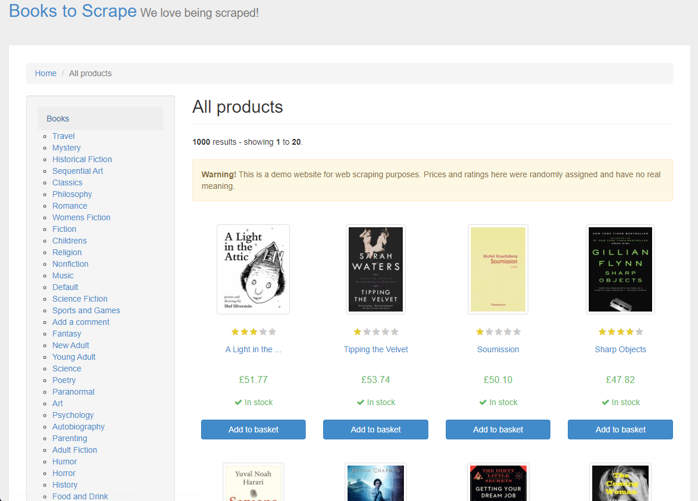

Profissional com mais de 10 anos de experiência em Tecnologia da Informação, atualmente focado em Engenharia de Dados. Por meio da programação, contribuo para a automação e otimização de processos, criando integrações de fluxos de dados bem estruturados que geram valor e impulsionam a melhoria contínua.
Ferramentas
- Apache Airflow
- Airbyte
- dbt
- Docker
- Git
- Meltano
- Power BI
- Snowflake
- Repositórios de código: Github e Bitbucket
Analista de Integração Pleno - Britânia Eletrodomésticos
Agosto 2024 - Atualmente
- Desenvolvimento de scripts em Python para extração de dados de APIs (VTEX, TOTVS, Mercado Livre, Shopee, Amazon).
- Automação de processos ETL utilizando o Apache Airflow, otimizando o fluxo de dados e garantindo a eficiência operacional.
- Criação e gerenciamento de tabelas em bancos de dados PostgreSQL e MySQL, incluindo a modelagem e normalização de dados.
- Integração de diversas APIs para comunicação de sistemas diferentes.
- Manipulação de dados utilizando bibliotecas Python, como Pandas, e transformação de dados em Data Warehouses com SQL.
- Configuração e utilização de Docker em ambiente local para validação e teste de aplicaçõe.
- Versionamento de código utilizando Git e Github.
- Criação de dashboards analíticos com Power BI para visualização de dados e tomada de decisão.
Especialista em suporte de TI - Autônomo
Março 2018 - Agosto 2024
- Planejamento, execução e implementação de projetos de infraestrutura em nuvem (AWS, GCP) e on-premises, com migração de ambientes corporativos para a nuvem, reduzindo custos em 70% e melhorando escalabilidade, segurança e disponibilidade.
- Projeto e configuração de redes internas e externas (LAN e WLAN) e virtualização de servidores com Hyper-V.
- Desenvolvimento de soluções de integração de dados, automação de processos de coleta e tratamento de dados utilizando Python e SQL.
- Implementação e gerenciamento de workflows de dados com Apache Airflow, otimizando processos ETL e garantindo a integridade e consistência dos dados.
Data Engineer - Indicium
Outubro 2023 - Abril 2024
- Extração de dados de API's utilizando Meltano.
- Desenvolvimento e manutenção de pipelines de dados estruturados em Python, utilizando Meltano.
- Gerenciamento de serviços AWS, incluindo Redshift, EC2, ECR e RDS.
- Construção e gerenciamento de workflows com Apache Airflow.
- Utilização de Docker para criação e gerenciamento de ambientes isolados.
- Persistência de dados estruturados e não estruturados em Snowflake, utilizando linguagem SQL.
- Uso de Bitbucket para controle de versionamento e trabalho colaborativo em equipe.
- Experiência em Linux, incluindo administração básica, execução de scripts e utilização do sistema operacional para realizar as tarefas diárias.
- Aplicação da metodologia ágil Scrum para organização e execução de projetos de forma colaborativa e iterativa.
- Migração de ferramenta de extração Airbyte para Meltano, melhorando em 30% o tempo das extrações.
Analista de suporte técnico - Ibema
Dezembro 2011 - Fevereiro 2018
- Suporte técnico ao usuário final, gerenciamento de Windows Server.
- Manutenção e configuração de equipamentos redes.
- Configuração e manutenção de Telefonia VOIP.
- Implementação de uma estrutura adequada para aumentar a estabilidade e a disponibilidade dos servidores e sistemas, reduzindo em 10% o tempo de inatividade devido a falhas de energia.
Projetos de Engenharia de Dados
Projeto Extract & Load - Spotify

Problema de negócio
- Uma inovadora empresa no setor de streaming de música, enfrenta desafios significativos em escalar seu pipeline de dados para acompanhar seu rápido crescimento global. Com uma base de usuários que se expande diariamente, a empresa precisa de um sistema que possa processar e analisar eficientemente grandes volumes de dados musicais.
Objetivos
- O projeto tem como objetivo desenvolver uma solução para a extração de dados do acervo musical do Spotify utilizando sua API. Após a extração, os dados serão armazenados em um Datalake na plataforma Snowflake.
Resultados
- Após a conclusão do projeto, foi possível automatizar e otimizar a extração e o carregamento de dados da API do Spotify, garantindo uma escalabilidade eficiente e robusta do sistema.
Tecnologias e linguagens utilizadas
- Python, Snowflake, Meltano e Airflow
Projeto completo em meu GitHub: GitHub
Automatização com Airflow

Problema de negócio
- Uma empresa de tecnologia busca otimizar suas operações e aprimorar a eficiência dos serviços oferecidos aos clientes. Eles estão focados em melhorar o transporte de produtos, especialmente para o Rio de Janeiro, para entender melhor o volume de vendas e a demanda na região.
Objetivos
- O projeto envolve duas tarefas principais usando o banco de dados SQLite Northwind. Primeiro, extrair dados da tabela 'Order' e salvar em "output_orders.csv". Em seguida, unir esses dados com informações da tabela 'OrderDetail', filtrar as vendas destinadas ao Rio de Janeiro, e calcular a soma das quantidades. O resultado é armazenado em "count.txt". Todas as tarefas são executadas em sequência, culminando na operação "export_final_output".
Resultados
- Este projeto foi capaz de automatizar, via Airflow, os processos de extração, transformação e carregamento dos dados. Ao final do processo, obteve-se o resultado da consulta da quantidade de vendas efetuadas para a cidade do Rio de Janeiro.
Tecnologias e linguagens utilizadas
Projeto completo em meu GitHub: GitHub
Web Scraping: Extraindo dados de uma loja de livros

Problema de negócio
- O objetivo desta análise é realizar coleta e organização de dados por meio de web scraping de um e-commerce de livros. A ideia consiste em extrair informações específicas dos livros, incluindo o título, categoria, avaliação em estrelas, preço e disponibilidade em estoque.
Objetivo
- Extrair informações específicas dos livros, incluindo o título, categoria, avaliação em estrelas, preço e disponibilidade em estoque.
Resultados
- Ao longo do projeto, foi desenvolvida uma coleta, transformação e armazenamento de dados de maneira automática por meio de um script em Python, contribuindo para responder às questões de negócio propostas neste projeto.
Tecnologias e linguagens utilizadas
Todos os detalhes estão em meu GitHub: GitHub
Entre em contato comigo por meio de:


{kind=link}
{kind=link}